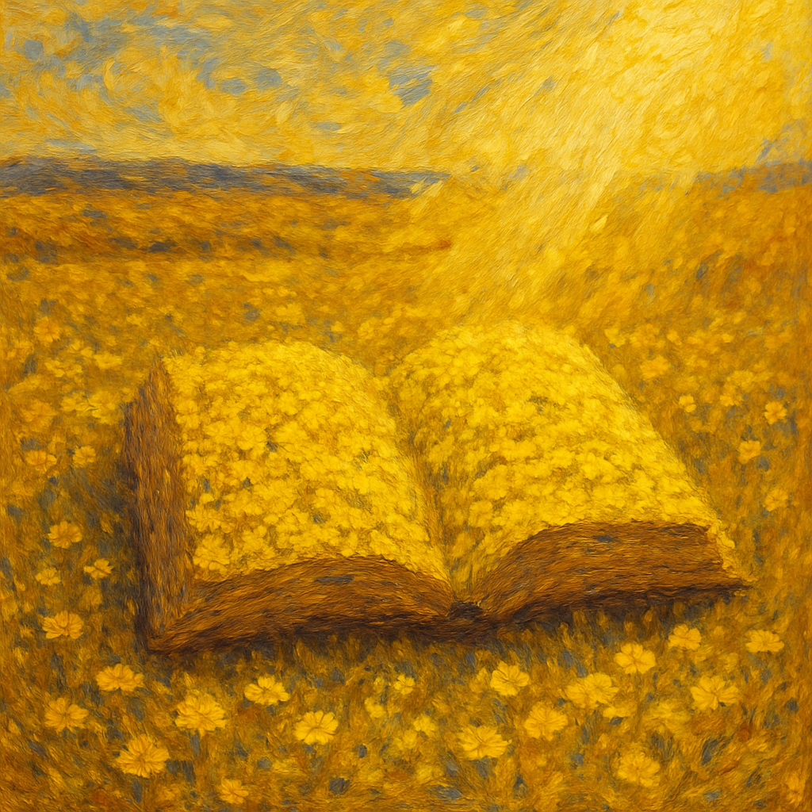

"In letting go, I had discovered the thing most worth holding on to: the knowledge that the imagination of life is always greater than that of the living." - Maria Popova
My hands may warm you,
not as some mystic healing touch,
but simply
to draw your attention, your body's own
great depths of willingness,
to where it can be best applied
and, in this moment,
I too receive my blessing,
for I know a little more
what Jesus meant when he said,
You are healed by your own faith.
We cannot change this pattern:
order, chaos, cosmos.
Yet, see your insignificance
magnificently free, one radicle
able to root where it will
in the changeless flow of grace,
to draw its nourishment directly
from source
and somehow, with effortfull surrender,
to live into a new dimension,
determined not by fate
but by a heart open
to the unimaginable latitudes
of love.